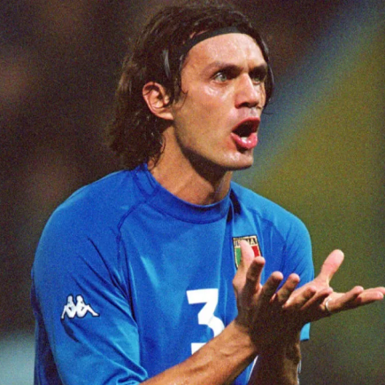

Seleção taliana
A cor tradicional da camisa da seleção é em homenagem à antiga casa real italiana de Saboia, cuja família reinou o país de 1861 até 1946 e tinha como a cor predominante da bandeira real o azul claro e, portanto, os membros da seleção são apelidados Azzurri e a seleção, de Nazionale. O primeiro uniforme italiano foi todo branco, segundo a federação, por ser a cor do estandarte real e imperial da Itália usaso de1880 a 1946, mas há quem diga que a verdade a cor tinha um preço mais em conta do que outras tonalidades na época. Foi somente em 1922 que os italianos estrearam a camisa azul. Os calções são tradicionalmente brancos, e tradicionalmente também a combinação contrária (camisas e meias brancas e calções azuis) constituem o uniforme reserva. Contudo, na Copa do Mundo de 1938, foi usado um uniforme totalmente preto, a cor do fascismo, nas quartas de finais contra os anfitriões franceses. Calções pretos também foram utilizados na Copa do Mundo de 1966, no jogo contra a União Soviética e Coréia do Norte, onde foram derrotados por 1x0 e eliminados da Copa daquele ano.
Títulos
Copa do Mundo: 4
Eurocopa: 2
Ídolos
- 
-

ROBERTO BAGGIO
Baggio é o quarto maior artilheiro da Itália de todos os tempos, 5 dos quais vieram durante o torneio nos Estados Unidos. O centro-avante também marcou o gol do torneio contra Checoslováquia 4 anos antes, que foi desde então eleito pela FIFA como o sétimo gol mais bonito da história das Copas do Mundo. Em nível de clube, o vencedor da Bola de Ouro de 1993, foi transferido de Fiorentina para Juventus em 1990 por uma taxa recorde. É, sem duvida, um dos maiores meia-atacantes que o mundo já viu.
GIUSEPPE MEAZZA
Meazza começou sua carreira internacional em 1930, nesse ano também conquistou sua braçadeira de capitão na estréia contra Suíça. O centro-avante marcou 2 vezes e liderou a Itália para a conquista da Copa do Mundo em 1934, e se consagrou como um dos melhores jogadores italianos de todos os tempos conquistando 4 anos mais tarde outra Copa do Mundo (França,1938). Sua contribuição naquela ocasião incluiu marcar o gol de vitória contra o Brasil na semi-final. Meazza permanece o segundo maior artilheiro da Itália de todos os tempos.
PAOLO MALDINI
É uma pena, um grande jogador como Maldini não ter sido campeão mundial com sua seleção. Ele passou mais da metade de seus 16 anos com Azzurra como capitão, mas ele foi incapaz de guiá-los ao sucesso. Porém, os troféus foram muito mais fáceis de vir para Maldini em nível de clube. Ele passou sua carreira inteira jogando com AC Milan, onde ele construiu uma lista de honras tão longa quanto seu braço. 7 títulos de Série A, 5 Ligas dos campeões, uma Coppa Italia, um Mundial de Clubes e 5 Super Copas da UEFA, muitos dos quais ele levantou como capitão.
FRANCO BARESI
Como um jogador, não há muito que Baresi não venceu. O homem de um clube levantou o título de Série A com AC Milan em 6 ocasiões separadas, assim como Liga dos Campeões 3 vezes. Ele foi uma parte do lado Milan que desmantelou Barcelona de Johan Cruyff em 1994. Baresi é considerado a mais alta estima em San Siro, tanto que sua camisa número 6 foi aposentada. E mais, em 1999, ele foi votado como o Jogador do Século do clube.